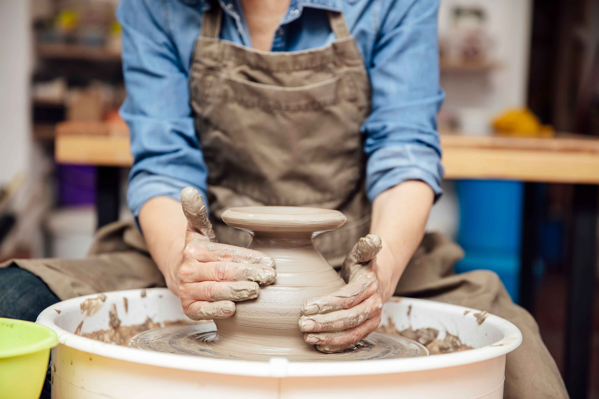
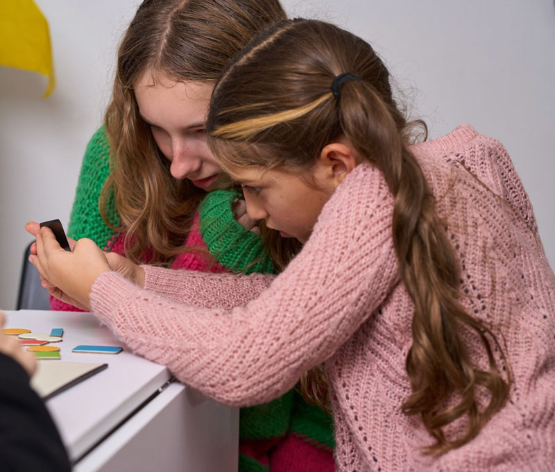

Hør, hvordan det er at være frivillig hos Red Barnet Ungdom
Aktiviteter og events hos Red Barnet Ungdom
RBU Løbeklub
Vær med i Red Barnet Ungdoms nye løbeklub - løb for sjov, fællesskab og en god sag!

Keramik event
Kom til vores keramik-event og støt Red Barnet Ungdom! Alt overskud fra salget går til en god sag!

Barnets ven
Frivillige rollemodeller knyttes til et udsat barn og laver sjove aktiviteter sammen. De deltager også i fællesarrangementer med andre børn og rollemodeller.